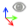

Gestion des commandes¶
Commandes et concepts¶
Le résultat d’une commande Code_Aster représente un concept. Un concept est une entité qui est décrit par une commande comme une liste de paramètres, avec pour chacun une valeur spécifique.
Dans l’exemple ci-dessous mesh est un concept produit par la commande LIRE_MAILLAGE.
mesh = LIRE_MAILLAGE(UNITE=20)
Les concepts relient ensemble des commandes - une commande peut référencée une autre en assignant le concept qu’elle produit en tant que valeur d’un mot clé :
mesh = LIRE_MAILLAGE(UNITE=20, FORMAT='MED')
model = AFFE_MODELE(MAILLAGE=mesh)
Du point de vue de l’interface utilisateur, un concept peut être considéré comme un synonyme de commande. L’utilisateur crée des concepts dans le cas d’étude en configurant des commandes.
Note
Toutes les commandes de Code_Aster ne produisent pas des concepts, et une commande Code_Aster peut produire plusieurs concepts.
Ajouter des commandes à l’étape (mode graphique)¶
En mode graphique l’ajout d’une commande peut se faire de plusieurs manières :
- via la barre d’outils dédiée commandes,
- via le menu Commandes,
- via le menu contextuel sur l’étape,
- via la recherche de commandes (voir ci-après).
Les commandes sont rangées par catégorie (Maillage, Matériaux …).
Lorsqu’une commande est ajoutée à l’étape, les commandes sont automatiquement rangées par catégorie et en fonction des dépendances entre elles. Il n’est pas possible de changer l’ordre des commandes dans l’onglet Données. Si des dépendances sont ajoutées ou supprimées, l’ordre des commandes est automatiquement recalculé.
L’onglet Données
Rechercher une commande¶
Le panneau de recherche de commandes est accessible via le bouton Voir tout qui se trouve en premier dans les menus de commandes.
{kind=link}
Le panneau de recherche présente également les commandes par catégorie. Le champ recherche permet de filtrer la liste des commandes.
Note
Selon la version de Code_Aster utilisée, les catégories peuvent être séparée en sous-catégories, qui apparaissent sous la forme de groupes dans le panneau de recherche.
Vous pouvez alors ajouter une commande à l’étape sélectionnée en double-cliquant sur le nom de la commande, ou en cliquant sur le bouton OK ou Appliquer.
Panneau de recherche d’une commande
Catégorie favoris¶
L’utilisateur peut ajouter les commandes qu’il utilise le plus dans la catégorie Favoris.
Pour ajouter une commande aux Favoris :
- Ouvrez le panneau de recherche,
- Sélectionner la commande
- Utiliser le menu contextuel Ajouter aux favoris.
Les Favoris sont accessibles depuis :
- Le menu Commandes > Favoris,
- Via la barre d’outils dédiées des Commandes,
- Un groupe dans le panneau de recherche (qui apparaît au début),
- Un élément du menu contextuel de l’onglet Données sur une étape.
Pour supprimer une commande des Favoris :
- Ouvrez le panneau de recherche,
- Sélectionner la commande
- Utiliser le menu contextuel Supprimer des favoris.
Avertissement
Si la catégorie des Favoris est vide, elle n’apparaît pas dans la barre d’outil, le menu principale ou le panneau de recherche.
Renommer une commande¶
Les commandes sont ajoutées avec un nom par défaut. Il est possible de les renommer en les éditant ou en les sélectionnant dans l’onglet Données puis en tapant F2 ou en utilisant le menu contextuel Renommer.
Éditer une commande¶
Pour éditer une commande, double-cliquer sur l’item dans l’onglet Données, ou sélectionner la commande et utiliser le menu contextuel ou le raccourcis clavier F4, ou cliquer sur le bouton de la barre d’outils, ou utiliser le menu contextuel Editer.
{kind=link}
Édition d’une commande
Le champ Nom permet de renommer la commande.
L’icône permet d’afficher la documentation de la commande. Cette opération est également disponible dans le menu principal Edition et dans le contexte menu de l’onglet Données.
{kind=link}
L’icône permet de n’afficher que les paramètres définis.
{kind=link}
Le bouton  permet d’éditer le commentaire d’une commande.
permet d’éditer le commentaire d’une commande.
L’icône permet d’afficher ou non la traduction des termes Code_Aster.
{kind=link}
Le bouton  permet d’afficher ou de masquer la vue principale. Il peut être utilie de masquer la vue principale lorsque l’on travaill sur un maillage comprenant un grand nombre de groupes, cela permet d’améliorer les performances la visualisation des groupes pouvant être longue.
{kind=link}
Le bouton  affiche le panneu Groupes impliqués qui permet de voir les groupes de mailles utilisés par la commande en cours d’édition.
affiche le panneu Groupes impliqués qui permet de voir les groupes de mailles utilisés par la commande en cours d’édition.
Le bouton  permet d’afficher la description d’un mot-clé :
permet d’afficher la description d’un mot-clé :
Qu’est-ce que c’est
L’utilisateur peut ensuite renseigner les paramètres de la commande en cochant la case du paramètre à renseigner puis en donnant sa valeur.
Note
les paramètres obligatoires sont suivis d’une astérisque rouge.
La valeur du paramètre peut être soit un champ texte ou numérique, une liste déroulante ou, pour les paramètres plus complexes, un bouton Editer permettant d’accéder à un sous-écran pour l’édition de ce paramètre.
L’écran suivant montre l’édition du paramètre INCREMENT.
Édition d’un paramètre
Indication
La seconde ligne (THER_LINEAIRE > INCREMENT) permet de se repérer dans l’enchaînement des écrans.
Supprimer ou copier une commande¶
Il est possible de supprimer une commande ou de la dupliquer en utilisant les boutons correspondants de la barre d’outils, les menus, ou les raccourcis clavier (respectivement Suppr et Ctrl+D).
Important
L’ordre des commandes et la validation sont effectuées lors de la suppression d’une commande pour vérifier que l’intégrité de l’étape est respectée.
Activer / désactiver la commande¶
Une commande peut être supprimée temporairement d’une étape en utilisant la fonction Désactiver. Les commandes désactivées sont affichées en gris dans l’onglet Données.
Commande désactivée
Toutes les opérations courantes peuvent être réalisées sur les commandes désactivées ; cependant elles ne sont pas disponibles dans les listes déroulantes lors de l’édition des autres commandes. De plus, lorsqu’une étape est convertie en mode texte ou exportée dans un fichier de commandes, les commandes désactivées apparaissent en tant que commentaires.
Les commandes désactivées peuvent être réactivée via l’opération Activer.
Les commandes Désactiver et Activer sont accessibles :
- via le menu Editer,
- Le menu contextuel d’une commande dans l’onglet Données.
Ajouter un commentaire¶
L’icône permet d’éditer le commentaire associé à la commande. Cet icône est présent dans la barre d’outils des commandes, sur le panneau d’édition de la commande, ou via le menu contextuel.
Commenter une commande
Utiliser des variables¶
L’icône permet d’ajouter une variable à l’étape. Cet icône est disponible dans la barre d’outils des commandes ou via le menu contextuel.
{kind=link}
Vous pouvez ensuite éditer cette variable pour saisir sa valeur. La valeur de la variable peut-être définie par une expression.
Définir une variable
Les variables peuvent ensuite être utilisées pour la définition des commandes. Lors de l’édition d’un champ d’une commande, choisissez l’icône à droite du champ de saisie. Le champ de saisie est alors remplace pour une liste déroulante dans laquelle vous pouvez sélectionner la variable à utiliser.
{kind=link}
Utilisation d’une variable
Utiliser la traduction des termes Code_Aster¶
L’icône permet d’afficher ou non la traduction des termes Code_Aster.
Utiliser la traduction des termes Code_Aster
Fonctions du presse-papier¶
Les fonctions standards du presse-papier Copier, Coller, Couper, peuvent être utilisées avec les commandes :
- Copier (Ctrl+C) : copie la commande sélectionnée dans le presse-papier,
- Couper (Ctrl+X) : supprime la commande de l’étape et copie son contenu dans le presse-papier,
- Coller (Ctrl+P) : insère la commande copiée dans le presse-papier dans l’étape sélectionnée.
{kind=link}
{kind=link}
{kind=link}
Ces opérations sont également accessibles dans le menu principal Edition et le menu contextuel.
Chercher¶
Il est possible d’effectuer des recherches dans l’arbre d’étude. Pour cela, sélectionner le panneau Données et presser Ctrl+F, ou utiliser le menu contextuel Find ou encore le menu Editer > Chercher.
La boîte de recherche apparaît en dessous de l’arbre d’étude.
Il est possible de chercher selon les critères suivants :
- Commande : recherche selon les noms de commandes Aster.
- Exemple : si l’utilisateur tape DEF, les éléments créés par les commandes comme DEFI_MATERIAU seront surlignés.
- Concept : recherche sur les noms des concepts existants.
- Exemple : si l’utilisateur tape MAT, l’élément correspondant à la commande MATE = AFFE_MATERIAU (…) est surligné.
- Mot-clé : recherche sur les mots-clés des commandes.
- Exemple : COMMAND (GROUP_MA=ALPHA) est surligné, si l’utilisateur tape GROUP.
- Groupe : recherche sur les noms des groupes de mailles ou de noeuds.
- Exemple : COMMAND (GROUP_MA=BETA) est surligné, si l’utilisateur tape BET.
- Valeur : recherche sur les valeurs des mots-clés.
- Exemple : COMMAND (ARGUMENT=123) est surligné, si l’utilisateur tape 123. La recherche par Groupe est un cas particulier de la recherche par Valeur.
Tout : recherche sur tous les modes à la fois. C’est le mode de recherche par défaut.
Important
Dans le mode de recherche par Concept, la recherche est effectuée récursivement, si un concept fait référence à un autre dont le nom satisfait au critère de recherche, ce premier concept est alors également inclus dans les résultats de la recherche.
- Exemple : si l’utilisateur tape MESH, l’élément correspondant à la commande MODEL = AFFE_MODELE(MAILLAGE=MESH) sera surlignée, en plus de l’élément MESH lui-même.
Les noeuds de l’étude satisfaisant au critère de recherche saisie par l’utilisateur sont surlignés avec un fond jaune, et il est possible de naviguer entre ces résultats en cliquant sur les boutons < (résultat précédent) et > (résultat suivant) ou en utilisant les raccourcis F3 et Shift+F3.
La recherche n’est pas sensible à la casse et renvoie les valeurs qui contiennent le critère de recherche.
Recherche dans l’arbre d’étude
Édition en mode texte¶
En mode texte, l’étape est gérée comme un tout et les commandes qui la compose ne sont pas affichées dans l’onglet Données sous l’étape.
Pour éditer les commandes d’une étape en mode texte, double-cliquer sur l’étape dans le panneau Données, presser F4, utiliser le menu contextuel Editer pour ouvrir l’éditeur de texte, ou cliquer sur le bouton de la barre d’outils.
Édition en mode texte
Note
Il est possible d’utiliser soit l’éditeur interne, soit un éditeur externe (voir Préférences de l’application).
En plus de pouvoir éditer le fichier de commande représentant l’étape en mode texte, l’utilisateur peut déclarer les concepts qui sont créés dans l’étude par cette étape (partie inférieure de la boîte de dialogue sur l’image ci-dessus). Les concepts saisis ici seront disponibles pour la sélection dans les étapes graphiques suivantes.
Avertissement
L’application ne peut pas vérifier que les concepts déclarés par l’utilisateur existent réellement dans l’étape. Il est de la responsabilité de l’utilisateur de vérifier que les informations sont correctes.
Important
L’utilisateur peut également déclarer les concepts créés dans l’étape en mode texte avec l’opération Editer les concepts qui est disponible dans le menu principal Edition et dans le menu contextuel d’une étape dans le panneau Données.